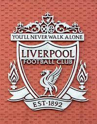

Hobby's/interesses
Video Games
Van kleine interesse tot grote hobby
Al sinds mijn jeugd ben ik erg geïnteresseerd geweest in video games. Het was praktisch alles dat ik deed in mijn vrije tijd, het was echt mijn vorm van ontspanning.  De eerste Video Game dat ik ooit speelde was de originele Crash Bandicoot op de Playstation 2 bij een oudere neef.
Sindsdien is mijn passie hiervoor enkel gegroeid en mijn interesse groter geworden.
Zo zat ik nagenoeg elke avond thuis video games te spelen op een oudere XBOX met games zoals Star Wars: Battlefront 2 en HALO:CE.
De eerste Video Game dat ik ooit speelde was de originele Crash Bandicoot op de Playstation 2 bij een oudere neef.
Sindsdien is mijn passie hiervoor enkel gegroeid en mijn interesse groter geworden.
Zo zat ik nagenoeg elke avond thuis video games te spelen op een oudere XBOX met games zoals Star Wars: Battlefront 2 en HALO:CE.
Op oudere leeftijd werd dit dan ook mijn voornaamste hobby, ik ging naar school, deed mijn huiswerk en speelde dan games op mijn consoles. Dit ging dan van Spyro tot Call of Duty.
Door het spelen van deze games begon ik dan ook een interesse te ontwikkelen voor de technologie erachter.
Het was vaak dat ik een missie express liet 'buggen' om te zien wat precies er zou gebeuren.
Dit was toen nog niet zo diep maar over de jaren heen is mijn interesse naar wat er achter de schermen gebeurd, zeker in video games, sterk gegroeid.
Vaardigheden door Video Games
Door video games heb ik enkele skills ontwikkeld. Ik kan van mezelf zeggen dat ik een erg goede hand-oog coördinatie heb en dat mijn probleemoplossend denken gestimuleerd is door video games.
De puzzels die voorkomen in video games loste ik steeds zelf op, al duurde mij dit soms een dag of twee. Verder is mijn engels door video games echt enorm vooruitgegaan.
Daarnaast heb ik ook geleerd om samen te werken in deze video games, een skill die ik ook erg belangrijk vind.
Voetbal
Late leeftijd, grote passie
Ik ben pas echt interesse beginnen tonen in voetbal op mijn 14de. 
Ik zat toen in een moeilijkere periode en ik zag toevallig dat er een wedstrijd van de Champions League zou komen op TV tussen FC Barcelona en Bayern Munchen.
Uit een beetje interesse besloot ik om hiernaar te kijken en ik was onmiddellijk zot na de wedstrijd. 3-0 voor FC Barcelona na een geweldige wedstrijd van Leo Messi.
Ik was sinds dan een fan van voetbal en vroeg voor een abonnement voor volgend seizoen zodat ik elke wedstrijd zou kunnen zien.
Dat seizoen begon ik een grote fan te worden van Liverpool. Ze waren niet goed bezig maar door Jurgen Klopp haalden ze toch op dramatische wijze de europa league finale.
De cultuur achter de club en het voetbal dat werd gespeeld, gepaard met de iconische 'You'll never walk alone', zorgden ervoor dat ik meteen een gigantische fan was.
Trip naar Liverpool
Vorig jaar kreeg ik dan een geweldig verjaardagscadeau van mijn vriendin. Voetbaltickets om Liverpool te gaan zien in Liverpool tegen rivaal Manchester City.
Dit was een absoluut geweldige ervaring, zeker omdat we met 1-0 hadden gewonnen. De hele wedstrijd had ik meegezongen met elk lied dat de supporters zongen.
De hele ervaring was absoluut geweldig en zou dit zeker nog eens willen doen. Het heeft mijn liefde voor de club enkel vergroot en kijk ernaar uit om nog eens te gaan.
Terug naar de home page of ga verder naar Contact.